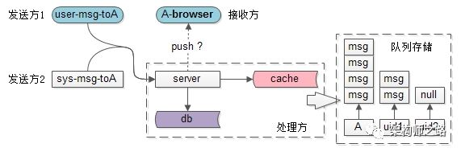
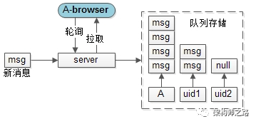

任何脱离业务的架构设计都是耍流氓。网页端收消息，究竟是推还是拉？
需求缘起

对于在网页端登录的用户A，发送方，也就是消息的来源有几方面：
系统发给A的“系统通知”，可能对实时性要求没这么高
用户发给A的“聊天消息”，有对实时性要求比较高，越实时越好
消息的处理方，也就是系统侧，一般来说：
有服务对消息进行逻辑处理
有数据库对数据进行落地
有缓存对数据进行加速
抛开这些技术细节不谈，暂且认为服务端对每一个用户都有一个“待收消息”的队列，里面存放了需要给这个用户的一切消息。
消息的接收方，也就是用户A，如果是在网页端登录，因为HTTP协议是“请求-响应”式的，服务端与网页之间没有消息通道，对于这类“收消息”的需求，是如何处理的呢？
方案一、轮询拉取

轮询拉取，是最容易想到的实现方式：
发送方发送了消息，先入队列
网页端起一个timer，每个一段时间（例如10秒），发起一个轮询请求，拉取队列里的消息
如果队列里有消息，就返回消息
如果队列里无消息，就10秒后再次轮询
这种方式的优势是：实现简单，直观且，容易理解，互联网兴起时，人数不多的聊天室就是这么玩的。
画外音：创办于1996年的互联网老站碧海银沙，曾经中国最火爆的聊天室，已于2017.9.27停止运营。
缺点也很明显：
实时性差：最坏的情况下，1条消息进入队列后，10s之后才会收到
效率低下：发消息是一个低频动作，如果10次轮询才收到1条消息，请求有效性只有10%，浪费了大量服务器资源
更要命的是，在这种方案下，实时性与效率是一对不可调和的矛盾：如果将轮询周期设为1/10，将时延缩短到1秒，意味着100次轮询才会收到1条消息，请求有效性则降为了1%。
方案二、建立长连接
如果要兼顾实时性和效率，长连接是最佳之选，PC端聊天软件基本都是使用长连接。网页端常见的实现长连接的方式有两种：
WebSocket
FlashSocket
这两种方案的细节不再展开，ta们均有一定的局限性。
更为通用的方式，是“长轮询”。
长轮询，是通过拼装HTTP短连接来达到长连接的效果，即保证了消息100%实时，又最大化的系统效率。
方案三、HTTP长轮询

HTTP长轮询的核心在于，浏览器与服务端之间建立了一条“通知连接”，它的特点是：
这是一条browser发往web-server的HTTP连接
这条连接只用来收取推送通知
不像普通的“请求-响应”式HTTP请求，这个HTTP会被服务端夯住，直到有推送通知到达，或者超过约定的时间
画外音：对于HTTP请求，为了提高效率，一般来说browser和web-server都会有一些设置，如果一条HTTP请求长时间没有数据（例如，150秒），会被断开。“通知连接”为了不被browser和web-server粗暴断开，一般会设置一个约定阈值（例如，小于150秒），由系统返回一个空消息，以便“优雅返回”。
更具体的，对于这条“夯住”与“只收推送通知”的“通知连接”，是怎么玩的呢？

场景1，发起通知连接时，队列里正好有消息，则：
发起通知连接，正好队列里有消息
实时把队列里的消息带回
立马再发起通知连接

场景二，发起通知连接时，队列里无消息，则：
发起通知连接时，队列里无消息
一直等待，直到触发“时间阈值”，返回无消息
立马再发起通知连接

场景三，新消息来时，正好有通知连接在，则：
新消息来时，正好有通知连接在
通知连接实时将消息带回
立马再发起通知连接
上面三个场景的最终状态，都是“一定，永远，会有一条通知连接，连接在浏览器与服务器之间”，这样就能够保证消息的实时性。当然，有人会说，HTTP的返回与再次发起会有一个时间差，如果这个时间差，恰巧有新消息过来呢？

场景四，新消息来时，没有通知连接，则：
新消息来时，没有通知连接
把新消息放入队列
最后这个场景，发生的概率非常小，但也确保了在“HTTP的返回与再次发起会有一个时间差”内，消息不会丢失，在通知连接发起后，消息能够实时返回。
总结
网页端收消息，究竟是推还是拉？
最容易想到的是拉，但实时性和效率是一对无法调和的矛盾
最佳的方式是推，但WebSocket和FlashSocket各有局限性
最通用的方式是长轮询，通过HTTP短连接拼装长连接，具体是通过“夯住”“只收推送通知”的“通知连接”来实现的，能够做到消息的实时性到达
挖坑篇：《feed流，单聊群聊，系统通知，状态同步，到底是推还是拉？》
填坑篇1：《系统通知，究竟是推还是拉？》
填坑篇2：《状态同步，究竟是推还是拉？》
若有收获，随手转发。